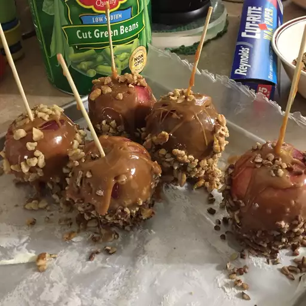

Caramel Apples

Description
Incredibly delicious caramel apples! The caramel coating is very gooey, so refrigerate the apples for about 15 minutes, or until the caramel has firmed up.
Ingredients
- 6 apples
- 6 wooden craft sticks
- cooking spray
- 1 (14 ounce) package individually wrapped caramels, unwrapped
- 2 tablespoons milk
Steps
- Remove the stem from each apple and press a craft stick into the top. Spray a baking sheet with cooking spray.
- Place caramels and milk in a microwave-safe bowl; microwave for 2 minutes, stirring once. Set aside to cool briefly.
- Roll each apple quickly in caramel sauce until well coated. Place on prepared sheet to set.